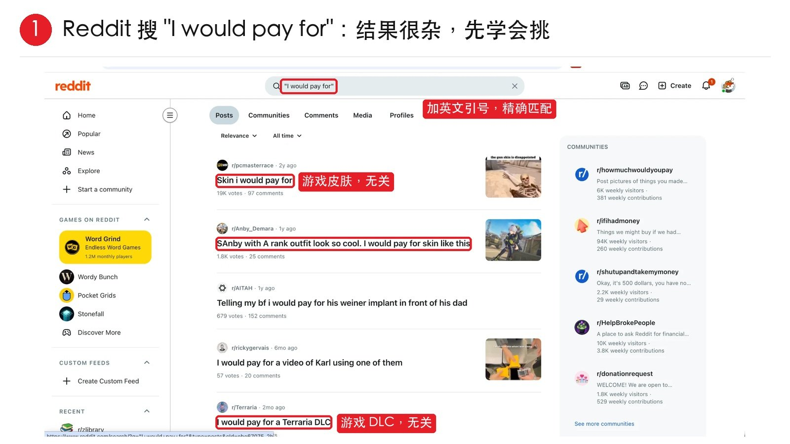
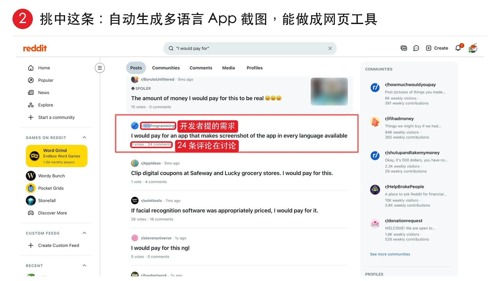
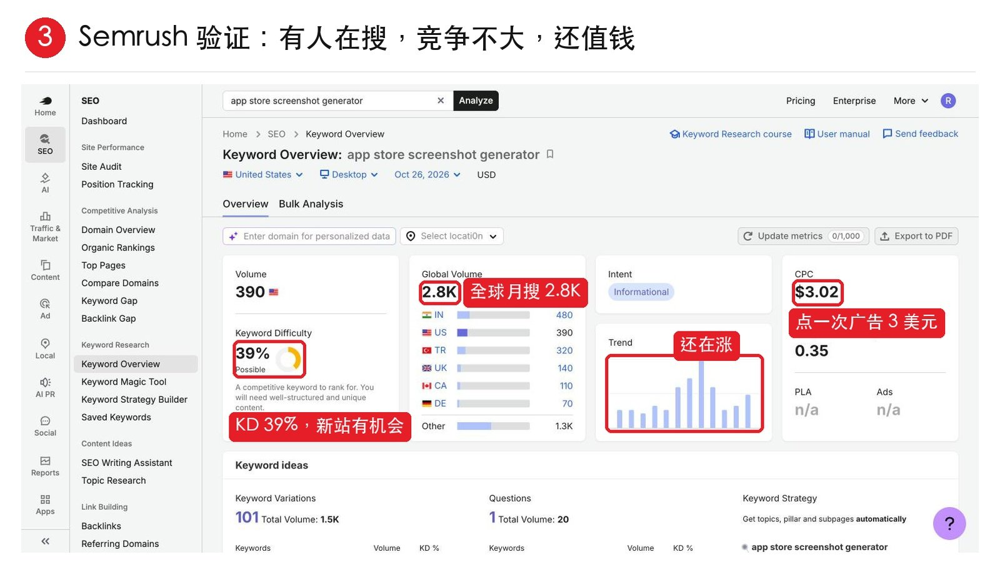

出海野路子，系列又又又更新了！
不过这个小技巧，有点很野。🤣
就是直接去 Reddit，找用户亲口说"我愿意付钱"的需求。
1、如搜 “I would pay for”，记得加英文引号。

2、我随便挑中了一条：一个 iOS 开发者说，愿意花钱买一个能自动生成各国语言 App 截图的工具。
发现评论区有人推荐了现成方案，但都要折腾配置。

3、然后，把需求转成关键词 app store screenshot generator，丢进 Semrush。

好家伙，全球每月 2.8K 次搜索，KD 39%，新站有机会，CPC 3 美元，说明真有人愿意为它花钱。
慢慢就找到需求的感觉了。
这样有人愿意付钱，又有人在搜，竞争还不大，这种需求就值得做了。